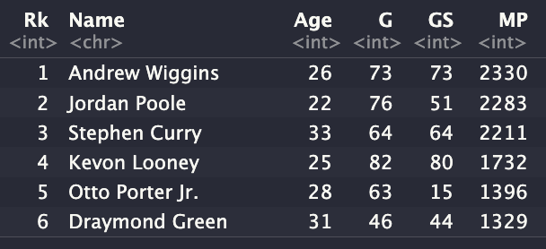

Show code
cd Desktop/2023In this tutorial I create my own package, SportsObserveR, with functions from my previous post, SportsObserveR - Part 1: Scraping Functions.

0. IntroductionRecently I have been looking to create more mathematical models of NBA statistics. However the process of scrapping and downloading data has become more tedious as the models scale. To save time, and lines of code I am creating a package in R to do a lot of the web scraping heavy lifting.
To start I will be creating two functions:
Scrape NBA Team Data
Scrape NBA Player Data
0.1 TechnologiesTo build a package in R you need three things:
1. Initial Set UpStart in a Bash Terminal and move to the folder where you want want to build your package. For me, I organize my projects by year, so I would use the following command:
cd Desktop/2023From this folder you then use the command R to open R in the terminal.
RWith R open load the following libraries:
library(usethis)library(devtools)If you do not have these packages installed, you can use the following code to install them:
install.packages("usethis", "devtools")Now use the create_package() function to create a package.
create_package("SportsObserveR")Then use q() to quit R, and y to save.
q()Check that a “SportsObserveR” folder now exists within your original directory with ls for “list”.
lsThen move into that directory.
cd SportsObserveR2. Github RepositoryOpen your Github and create a repository with the same name as your project. From the Bash Terminal type in the following commands (similar to what is given on your Github page) to connect your project folder to your Github repo.
git initgit statusgit add --allgit statusgit commit -m"my first commit"git branch -M mainNote: You will want to replace ‘rbolt13’ with your own username.
git remote add origin https://github.com/rbolt13/SportsObserveR.gitgit push -u origin mainRefresh your github repo page to verify that your files have been successfully uploaded.
3. Creating the First FunctionUsing R Studio Console (or opening R first in your bash terminal) reload the usethis and devtools packages.
library(usethis)library(devtools)To create a function in r use use_r(), and then load_all().
use_r("scrape_nba_team_stats")load_all()Now use the check() function to look at any potential errors.
check()There will probably be one warning about a Non-standard license specification (see image below).

Use the use_mit_license() function to update the license and check your project again for errors.
use_mit_license()check()Everything should be green, which means it is time to create the first function. In the R file named “scrape_nba_team_stats.R” copy the code below:
#' Scrapes NBA team stats tables off basketball-reference.com.
#'
#'@import rvest
#'@import magrittr
#'
#'@param slug is a char string that corresponds to the sports team.
#'@param year is a char string that corresponds to the playoff year.
#'@param stats_tb is a char string that corresponds to the statistics table such as #per_game, #totals, #per_36_minutes, and #advanced.
#'
#'@return a data frame of statistics for a specific NBA team.
#'@export
#'
#'@examples
#'scrape_nba_team_stats("CHI", "1998","#totals")
scrape_nba_team_stats <- function(slug, year, stats_tb){
# define team page URL
url <- base::paste0("https://www.basketball-reference.com/teams/",
slug,"/", year, ".html")
# Read stats table
stats_tb <- url %>%
read_html %>%
html_node(stats_tb) %>%
html_table()
# Rename Column 2 to Name
base::names(stats_tb)[2] <- "Name"
# Replace NA values with 0 (for stat functions)
stats_tb[base::is.na(stats_tb)] <- 0
# make data frame
df <- base::data.frame(stats_tb)
base::return(df)
}Now save this file, and in the R Studio Console type document() to create documentation for this function.
document()Check that the documentation works.
?scrape_nba_team_stats()Run one more check() for good measure.
check()If everything looks good, from the Bash Terminal push this code to github.
git statusgit add --allgit statusgit commit -m"Created first function"git push origin main4. Create raw-dataIn the R Studio Console use the use_data_raw() function to create a raw-data folder that includes a DATASET.R file. In the future I want to use this data to test my functions, as well as create complimentary data to use with the SportsObserveR package.
usethis::use_data_raw()From here save the total statistics for the 1998 Chicago bulls, and the check to see if the data looks correct.
bulls_totals <- scrape_nba_team_stats("CHI",
"1998",
"#totals")Now save this data as a .csv into the raw-data folder.
write.csv(bulls_totals,
"data_raw/1998_Bulls_Totals.csv")Then update the DATASET.R file, as shown below:
usethis::use_data("1998_Bulls_Totals.csv")Run another check:
check()If everything looks good, it is time to push this code to github again.
git statusgit add --allgit statusgit commit -m"Created data_raw"git push origin main5. Creating TestsNow to build tests which are intended to detect and protect against bugs. To do this, in the R Studio Console use the function use_testthat(), and use_test():
use_testthat()use_test("scrape_nba_team_stats")I am still learning how to create god test, but for starters I want to make sure that our data is returning a list.
test_that("Returns that typeof is list.", {
expect_equal(typeof(scrape_nba_team_stats("CHI", "1998","#totals")),
"list")
})Check for errors.
check()If everything looks green, from the Bash Terminal push to Github.
git statusgit add --allgit statusgit commit -m"Created test for scrape_nba_team_stats"git push origin main6. Update DescriptionUpdate your description file by filling out the appropriate information for the spots given. Be sure to include Imports: rvest, magrittr, see my example below:
Package: SportsObserveR
Title: Scrape Sports Statistics Off Sports-Reference.com
Version: 0.0.0.9000
Imports: rvest, magrittr
Authors@R:
person("Randi", "Bolt", , "randibolt93@gmail.com", role = c("aut", "cre"),
comment = c(ORCID = "YOUR-ORCID-ID"))
Description: This package is made up of many functions that scrape data off sports-reference.com.
License: MIT + file LICENSE
Encoding: UTF-8
Roxygen: list(markdown = TRUE)
RoxygenNote: 7.2.3
BugReports: https://github.com/rbolt13/SportsObserveR/issues
Suggests:
testthat (>= 3.0.0)
Config/testthat/edition: 3In the R Studio Console run another check.
check()If everything looks good, from the Bash Terminal push to github.
git statusgit add --allgit statusgit commit -m"Updated Description"git push origin main7. Create READMETo create a README file where you can show code examples in R, in the R Studio Console use the use_readme_rmd() function. This file will come with a lot of information already pre-filled in.
use_readme_rmd()Fill out the appropriate information such as the goal of the package, how to install it, and some examples on how to use it. Check out my readme if you need help or inspiration.
Next to create a README file in markdown, use the function build_readme() to render the .rmd file as such. Note that you will need to use this function every time you update the .Rmd, because your github will only display the README.md file.
build_readme()If everything looks good, from the Bash Terminal push again to github.
git statusgit add --allgit statusgit commit -m"Created README"git push origin main8. Add Player Statistics FunctionNow lets add one more function, scrape_nba_player_stats by repeating steps 3, 5, and 7.
8.1 Creating the FunctionFrom the R Studio Console, create the function file, and load it into your enviroment.
use_r("scrape_nba_player_stats")load_all()In the R file named “scrape_nba_player_stats.R” copy the code below:
#' Scrapes NBA player stats tables off basketball-reference.com.
#'
#'@import rvest
#'@import magrittr
#'
#'@param name is a char string that corresponds to the players name.
#'@param stats_tb is a char string that corresponds to the statistics table such as #per_game, #totals, #per_36_minutes, and #advanced.
#'
#'@return a data frame of statistics for a specific NBA player.
#'@export
#'
#'@examples
#'scrape_nba_player_stats("Allen Iverson", "#per_game")
scrape_nba_player_stats <- function(name, stats_tb){
# make name lower case
lower_case_name <- base::tolower(name)
# split name
split_name <- base::strsplit(lower_case_name, " +")[[1]]
# define first and last name
first_name <- split_name[[1]]
last_name <- split_name[[2]]
# first letter of last name
letter <- base::substr(last_name, 1,1)
# first five letters of last name
last_5 <- base::substr(last_name, 1, 5)
# first two letters of first name
first_2 <- base::substr(first_name, 1,2)
# define team page URL
url <- base::paste0("https://www.basketball-reference.com/players/",letter ,"/",last_5,first_2,"01.html")
# Read stats table
stats_tb <- url %>%
read_html %>%
html_node(stats_tb) %>%
html_table()
# Rename Column 2 to Name
names(stats_tb)[2] <- "Name"
# Replace NA values with 0 (for stat functions)
stats_tb[base::is.na(stats_tb)] <- 0
# make list a dataframe
df <- base::data.frame(stats_tb)
base::return(df)
}Now save this file, and in the R Studio Console type document() to create documentation for this function.
document()Check that the documentation works:
?scrape_nba_player_stats()Use the check() function to look at any potential errors.
check()If everything looks good, from the Bash Terminal push this code to github.
git statusgit add --allgit statusgit commit -m"Created second function"git push origin main8.2 Creating TestsFrom the R Studio Console use use_test() again to create a test file for scrape_nba_player_stats().
use_test("scrape_nba_player_stats")Next create a similar code to what was previously done for scrape_nba_team_stats().
test_that("Returns that typeof is list.", {
expect_equal(typeof(scrape_nba_player_stats("Kareem Abdul-Jabbar", "#totals")),
"list")
})Check for errors.
check()If everything looks green, from the Bash Terminal push to Github.
git statusgit add --allgit statusgit commit -m"Created test for scrape_nba_player_stats"git push origin main8.3 Update READMEAdd another example to the readme.rmd file using the scrape_nba_player_stats() function, and then update the .md file.
build_readme()From the Bash Terminal push this update to Github.
git statusgit add --allgit statusgit commit -m"added scrape_nba_player_stats example to readme"git push origin main9. Check Package WorksNow that the SportsObserveR package is up and running, lets check to make sure that it works.
# install.packages("devtools")
devtools::install_github("rbolt13/SportsObserveR")library(SportsObserveR)gsw_totals <- scrape_nba_team_stats("GSW", "2022", "#totals")
utils::head(gsw_totals) Rk Name Age G GS MP FG FGA FG. X3P X3PA X3P. X2P X2PA
1 1 Andrew Wiggins 26 73 73 2330 475 1019 0.466 157 399 0.393 318 620
2 2 Jordan Poole 22 76 51 2283 474 1058 0.448 211 580 0.364 263 478
3 3 Stephen Curry 33 64 64 2211 535 1224 0.437 285 750 0.380 250 474
4 4 Kevon Looney 25 82 80 1732 208 364 0.571 0 1 0.000 208 363
5 5 Otto Porter Jr. 28 63 15 1396 193 416 0.464 80 216 0.370 113 200
6 6 Draymond Green 31 46 44 1329 135 257 0.525 16 54 0.296 119 203
X2P. eFG. FT FTA FT. ORB DRB TRB AST STL BLK TOV PF PTS
1 0.513 0.543 149 235 0.634 85 240 325 161 76 51 111 158 1256
2 0.550 0.548 246 266 0.925 34 226 260 304 60 23 187 206 1405
3 0.527 0.554 275 298 0.923 34 301 335 404 85 23 206 130 1630
4 0.573 0.571 75 125 0.600 208 388 596 165 50 52 67 215 491
5 0.565 0.560 49 61 0.803 86 276 362 94 68 29 37 83 515
6 0.586 0.556 60 91 0.659 45 291 336 320 61 50 139 136 346ai <- scrape_nba_player_stats("Allen Iverson", "#per_game")
utils::head(ai, 10) Season Name Tm Lg Pos G GS MP FG FGA FG. X3P X3PA X3P. X2P X2PA
1 1996-97 21 PHI NBA PG 76 74 40.1 8.2 19.8 .416 2.0 6.0 .341 6.2 13.8
2 1997-98 22 PHI NBA PG 80 80 39.4 8.1 17.6 .461 0.9 2.9 .298 7.2 14.7
3 1998-99 23 PHI NBA SG 48 48 41.5 9.1 22.0 .412 1.2 4.1 .291 7.9 17.9
4 1999-00 24 PHI NBA SG 70 70 40.8 10.4 24.8 .421 1.3 3.7 .341 9.1 21.0
5 2000-01 25 PHI NBA SG 71 71 42.0 10.7 25.5 .420 1.4 4.3 .320 9.4 21.2
6 2001-02 26 PHI NBA SG 60 59 43.7 11.1 27.8 .398 1.3 4.5 .291 9.8 23.4
7 2002-03 27 PHI NBA SG 82 82 42.5 9.8 23.7 .414 1.0 3.7 .277 8.8 20.0
8 2003-04 28 PHI NBA SG 48 47 42.5 9.1 23.4 .387 1.2 4.1 .286 7.9 19.3
9 2004-05 29 PHI NBA PG 75 75 42.3 10.3 24.2 .424 1.4 4.5 .308 8.9 19.7
10 2005-06 30 PHI NBA PG 72 72 43.1 11.3 25.3 .447 1.0 3.1 .323 10.3 22.2
X2P. eFG. FT FTA FT. ORB DRB TRB AST STL BLK TOV PF PTS
1 .448 .467 5.0 7.2 .702 1.5 2.6 4.1 7.5 2.1 0.3 4.4 3.1 23.5
2 .494 .486 4.9 6.7 .729 1.1 2.6 3.7 6.2 2.2 0.3 3.1 2.5 22.0
3 .440 .439 7.4 9.9 .751 1.4 3.5 4.9 4.6 2.3 0.1 3.5 2.0 26.8
4 .435 .446 6.3 8.9 .713 1.0 2.8 3.8 4.7 2.1 0.1 3.3 2.3 28.4
5 .441 .447 8.2 10.1 .814 0.7 3.1 3.8 4.6 2.5 0.3 3.3 2.1 31.1
6 .419 .422 7.9 9.8 .812 0.7 3.8 4.5 5.5 2.8 0.2 4.0 1.7 31.4
7 .440 .436 7.0 9.0 .774 0.8 3.4 4.2 5.5 2.7 0.2 3.5 1.8 27.6
8 .408 .412 7.1 9.5 .745 0.7 3.0 3.7 6.8 2.4 0.1 4.4 1.8 26.4
9 .451 .453 8.7 10.5 .835 0.7 3.3 4.0 7.9 2.4 0.1 4.6 1.9 30.7
10 .465 .467 9.4 11.5 .814 0.6 2.6 3.2 7.4 1.9 0.1 3.4 1.7 33.0
Awards
1 MVP-17,ROY-1
2
3 MVP-4,NBA1
4 MVP-7,NBA2,AS
5 MVP-1,NBA1,AS,DPOY-11
6 MVP-9,NBA2,AS
7 MVP-6,NBA2,AS,DPOY-6
8 AS
9 MVP-5,NBA1,AS,DPOY-11
10 MVP-10,NBA3,AS10. ConclusionThis package will be helpful in collecting a large amount of NBA related data, and be a great place to put future functions, data, and models all related to sports statistics.
Please leave me a comment below if you have any questions, need further clarification, or want to get involved in expanding the capabilities of this package.
Note: You may have a hard time using this package if you are accessing it with a VPN.